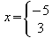

Documentation / User FAQ / Formula/Math / Next
Since brackets have a grouping function they must always match and be correctly nested.
To get a single bracket without a matching bracket partner you have to escape the bracket with a backslash. For example to get a "[" without a corresponding "]" you should enter \[.
Thus to typeset the interval [3;8) you should enter \[3 ";" 8\). The quotation marks around the semicolon ensures that it is not typeset in italic. (You're right, this has nothing to do with brackets!)
For scalable brackets it is essential that left and right matches, since the content that the brackets encloses must be well defined.
In this case you can use the invisible bracket none to get a single bracket. For example to get a scalable "[" without a corresponding "]" you should enter left [ ... right none.
Thus to typeset you should enter x=left lbrace binom -5 3 right none.